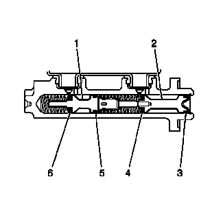

制动系统内部泄漏测试
- 1.起动发动机并怠速运行。
- 2.用稳固的力轻踩制动踏板。观察制动踏板感觉和行程。
- 3.松开制动器并将点火开关置于OFF（关闭）位置。
- 4.如果制动踏板感觉绵软，但制动踏板行程不过大，则执行以下步骤：
-

5.如果制动踏板感觉不绵软，但制动踏板行程过大，则执行以下步骤：
- 5.1 松开总泵至制动助力器的安装螺母。
- 5.2 从制动助力器中小心地适量拔出总泵，以检查总泵的安装面。
- 5.3 检查主活塞 (2) 上的总泵安装面制动液是否泄漏。
- 6.如果总泵的主活塞 (2) 周围出现任何泄漏，然后主活塞的主密封件 (4) 和/或辅助密封件 (3) 发生泄漏，则总泵需要大修或者更换。
- 7.如果总泵主活塞 (2) 没有泄漏迹象，则用压力排出制动系统中的空气。参见液压制动系统的排气。
- 8.如果制动踏板感觉不绵软并且制动踏板行程起初稳定且不过大，但随后逐渐降低，则由于辅助活塞主密封件 (6) 或辅助密封件 (5) 经过辅助活塞 (1) 的位置存在内部泄漏，从而导致总泵需要大修或者更换。
- 9.如果制动踏板感觉不绵软，制动踏板行程开始时稳定且不过大，随后略微下降，然后再变得稳定，则制动压力调节阀 (BPMV) 可能存在内部泄漏，可能需要更换。